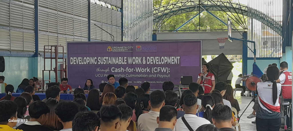
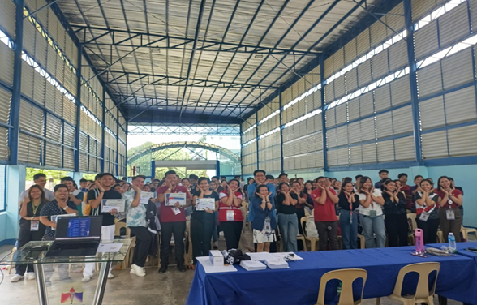
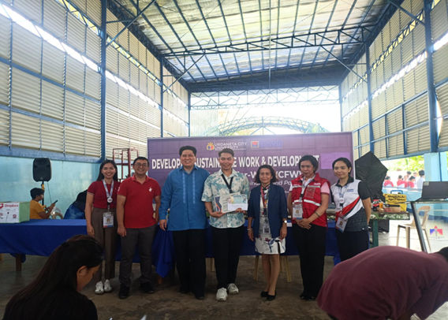
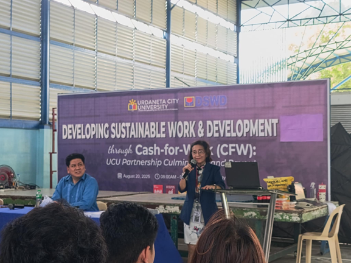
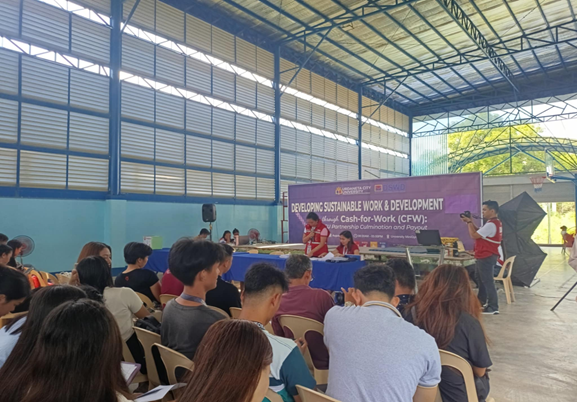

Urdaneta City, Philippines — Reinforcing its commitment to social responsibility and inclusive community development, Urdaneta City University (UCU) actively supported the Department of Social Welfare and Development's Kalahi-CIDSS Cash-for-Work Program through a comprehensive orientation and after-activity engagement.
This initiative highlights the University's role as a partner in nation-building efforts that aim to uplift vulnerable sectors and promote sustainable growth.

As one of the selected beneficiaries of the program, UCU collaborated closely with the Department of Social Welfare and Development to facilitate awareness and participation in the Cash-for-Work initiative.
The program provides short-term employment opportunities by engaging individuals in community-based projects designed to improve public services and infrastructure.

Through structured orientation sessions, participants were guided on the program's objectives, implementation processes, and expected outcomes—ensuring clarity, transparency, and active involvement.
The University's participation extends beyond logistical support, as it fosters an environment where students, staff, and community members can contribute meaningfully to development efforts.
By integrating civic engagement into its institutional activities, UCU enables stakeholders to take part in initiatives that directly impact local communities while promoting dignity in labor and economic empowerment.


"UCU remains steadfast in its mission to extend education beyond the classroom by engaging in programs that create real-world impact," shared a university representative.
"Our involvement in the Kalahi-CIDSS Cash-for-Work Program reflects our dedication to supporting community welfare, strengthening partnerships, and empowering individuals through meaningful opportunities."

This initiative aligns with the principles of United Nations Sustainable Development Goal 1 (No Poverty), which emphasizes the importance of reducing poverty through inclusive economic participation and social protection systems.
By supporting livelihood opportunities and community-driven development, UCU contributes to broader national and global efforts aimed at improving quality of life and fostering resilience among underserved populations.
Through active collaboration, compassionate service, and a strong sense of civic duty, Urdaneta City University continues to exemplify its role as a catalyst for positive change.
As it strengthens partnerships with government agencies and community stakeholders, the University reaffirms its commitment to building a responsive and engaged academic community—one that empowers individuals and advances sustainable development for all.